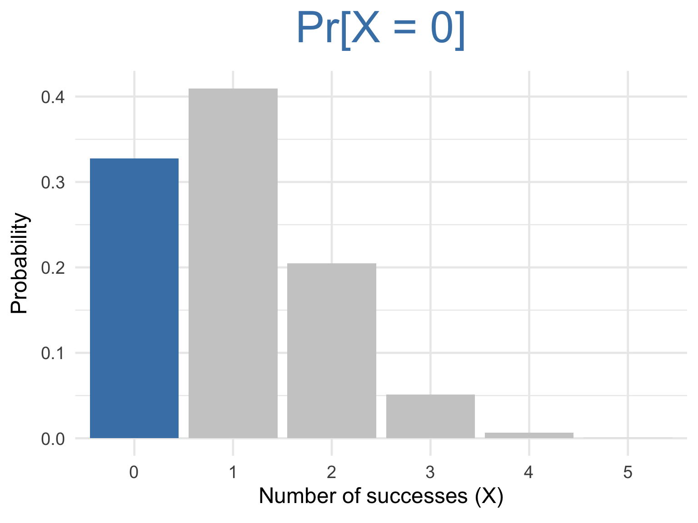
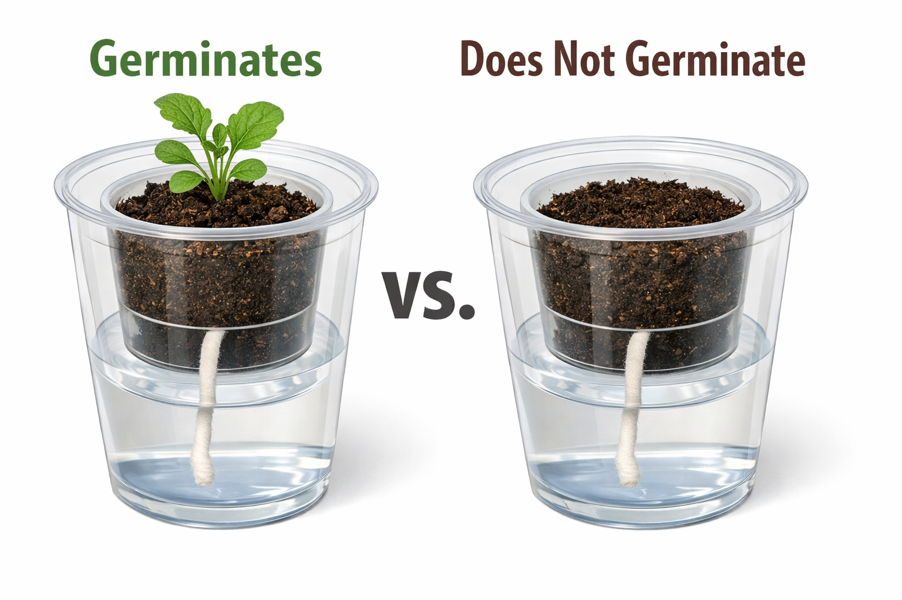
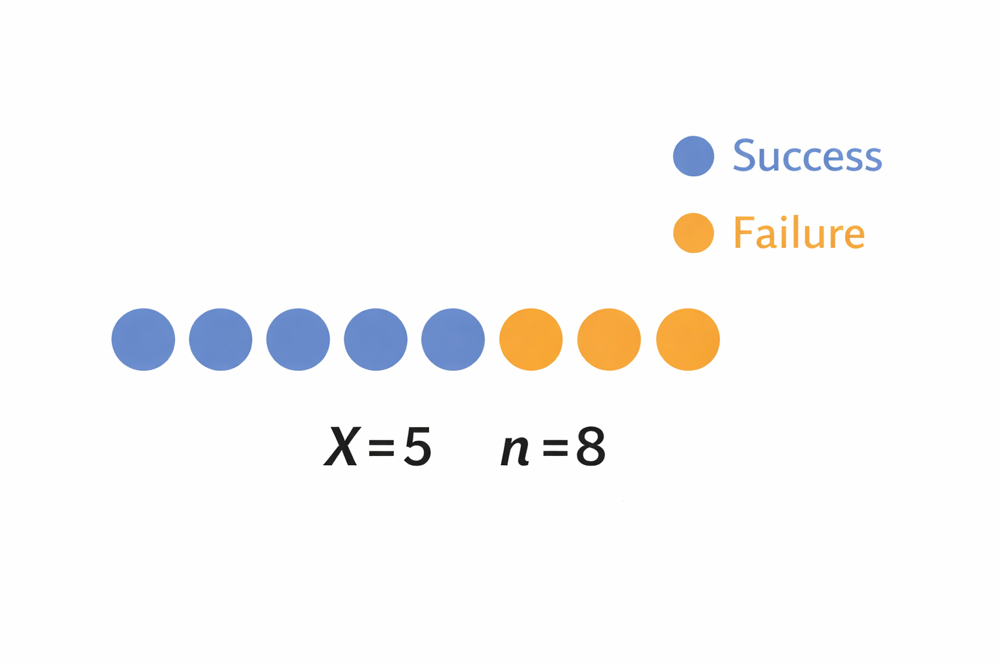
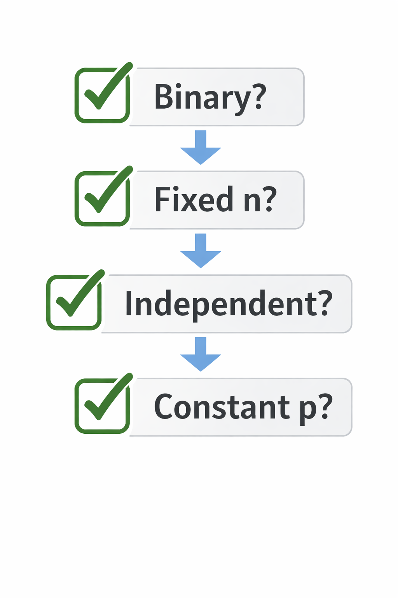
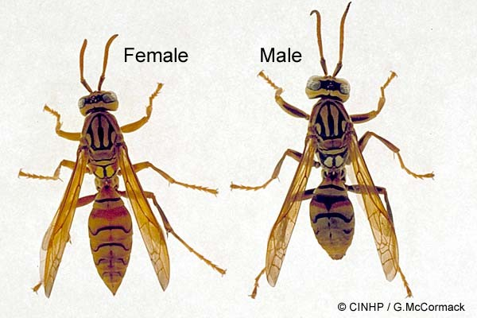
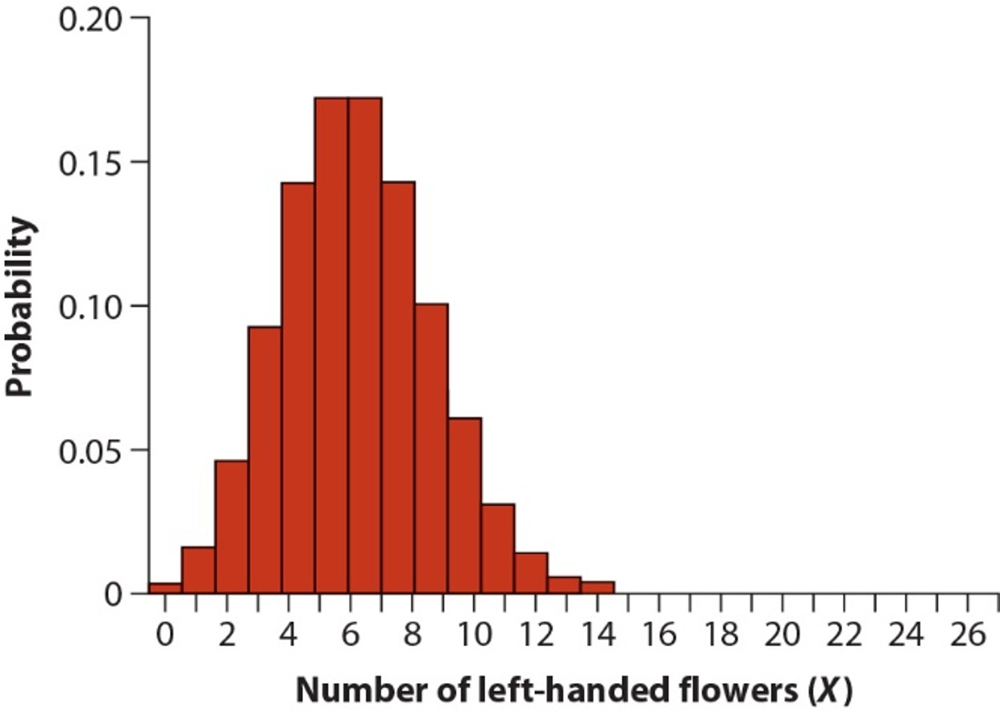
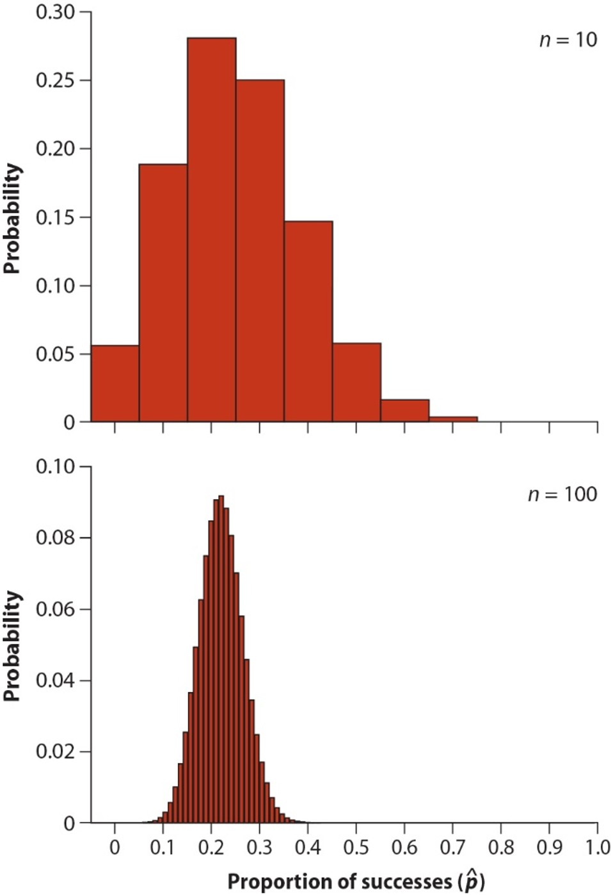
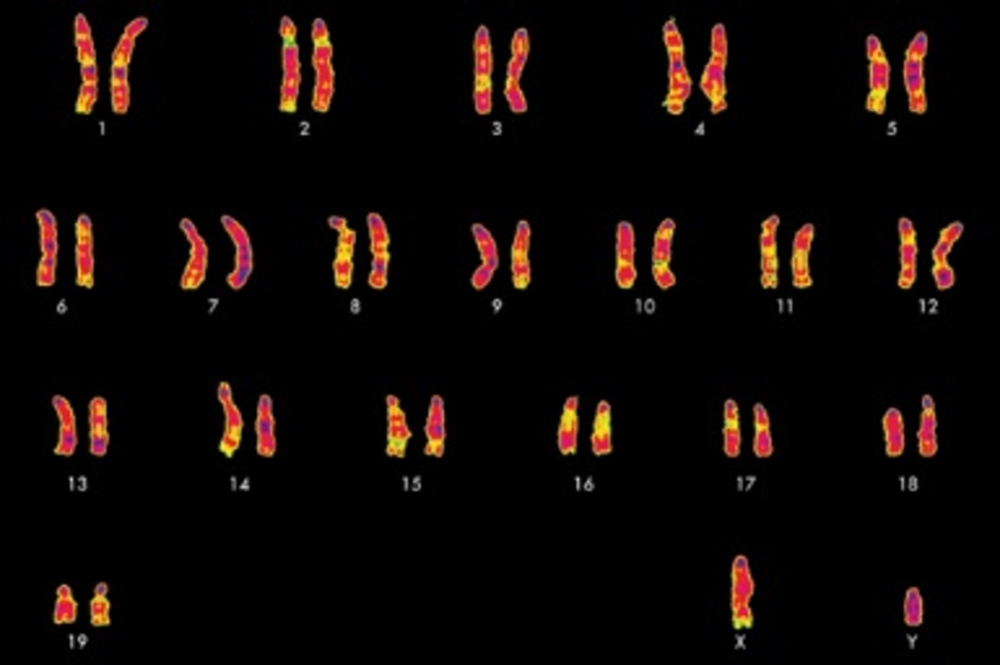
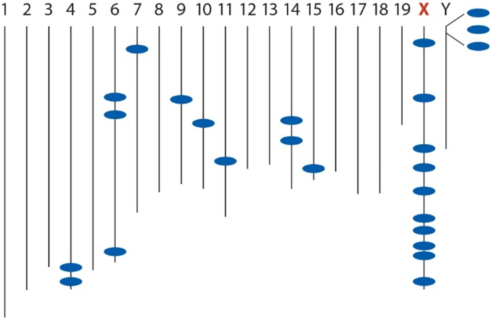

ABD 3e Chapter 7
By the end of this lecture, you should be able to:
Many biological variables have only two possible outcomes.
These are called a binary variable (or Bernoulli variable).
We record each observation as:
Each observation is a single trial with two possible results.
Examples:

Suppose we observe a binary outcome repeatedly.
Let:
\[ X = \text{number of successes in } n \text{ trials} \]
Now we are no longer modeling a single 0/1 outcome.
We are modeling a count:

A dataset follows a binomial model if:
If these conditions hold, then:
\[ X \sim \text{Binomial}(n, p) \]

If:
\[ X \sim \text{Binomial}(n, p) \]
Then we can compute the probability of any specific number of successes:
\[ \operatorname{Pr}[X = x] \]
We need a formula that tells us:
For a binomial random variable:
\[ \operatorname{Pr}[X = x] = \binom{n}{x} p^{x} (1 - p)^{n - x} \]
Where:
Suppose you randomly sample \(n=5\) wasps from a population where each wasp has the probability \(p=0.2\) of being male. The probability then that exactly \(3\) of the wasps in your sample are male is:
\[ \operatorname{Pr}[3 \text{ males}] = \binom{5}{3} (0.2)^{3} (1-0.2)^{5-3} \]
\[ = \frac{(5\times4\times3\times2\times1)}{(3\times 2\times 1) \times (2\times1)}(0.2)^3(0.8)^2 \]
\[ = \frac{120}{6 \times 2} \times 0.008 \times 0.64 \]
\[ =0.234 \]
…chance of getting 3 males in a sample of 5 wasps

For a fixed ( n ) and ( p ),
\[ X \sim \text{Binomial}(n, p) \]
The binomial distribution is:
\[ X = 0, 1, 2, \dots, n \]
For the wasp example, we calculated:
\[ \operatorname{Pr}[X = 3] \]
But we could also calculate:
\[ \operatorname{Pr}[X = 0], \operatorname{Pr}[X = 1], \dots, \operatorname{Pr}[X = n] \]
Together, these probabilities form the binomial distribution.

The binomial distribution tells us:
If we repeated this process many times,
what counts of successes we would expect to see.
It describes the distribution of possible counts we would observe if we repeated the process many times.
System description
Bees transfer pollen:
This reduces self-fertilization (“selfing”).
Under a simple model of inheritance, crossing left- and right-handed strains should yield offspring with a 1:3 ratio of left- to right-handed flowers.
I.e. 25% of offspring should be left-handed and 75% should be right-handed.
For this example, let’s call left-handedness “success” and right-handedness “failure”
Let’s try looking at a complete sampling distribution instead of a single outcome
Image we randomly sample \(n=27\) individuals from a population in which \(p=0.25\)
What is the probability that the sample contains exactly \(X\) successes?
\[ \operatorname{Pr}[6 \text{ left-handed flowers}] \\= \binom{27}{6} (0.25)^{6} (1-0.25)^{27-6}\\= 296010 \times 0.000244 \times 0.002378\\=0.1719 \]
Repeat previous step to calculate the probability of each outcome.
| X | Pr[X] |
|---|---|
| 0 | 4.2×10-4 |
| 1 | 0.0038 |
| 2 | 0.0165 |
| 3 | 0.0459 |
| 4 | 0.0927 |
| 5 | 0.1406 |
| 6 | 0.1719 |
| X | Pr[X] |
|---|---|
| 7 | 0.1719 |
| 8 | 0.1432 |
| 9 | 0.1008 |
| 10 | 0.0605 |
| 11 | 0.0312 |
| 12 | 0.0138 |
| 13 | 0.0053 |
| X | Pr[X] |
|---|---|
| 14 | 0.0018 |
| 15 | 5.1×10-4 |
| 16 | 1.3×10-4 |
| 17 | 2.8×10-5 |
| 18 | 5.1×10-6 |
| 19 | 8.1×10-7 |
| 20 | 1.1×10-7 |
| X | Pr[X] |
|---|---|
| 21 | 1.2×10-8 |
| 22 | 1.1×10-9 |
| 23 | 7.9×10-11 |
| 24 | 4.4×10-12 |
| 25 | 1.8×10-13 |
| 26 | 4.5×10-15 |
| 27 | 5.5×10-17 |


So far, we have modeled the count:
\[ X = \text{number of successes in } n \text{ trials} \]
But we often report results as a proportion:
\[ \frac{X}{n} \]
Same underlying binomial randomness.
Different scale.
\[ \hat{p}=\frac{X}{n} \]
\[ \sigma_\hat{p}=\sqrt{\frac{p(1-p)}{n}} \]
This is also called the standard error of \(p\)
As sample size increases, standard error goes down
In reality, we can almost never calculate this standard error because we don’t know true \(p\)
We estimate standard error by replacing \(p\) with \(\hat{p}\)
\[ \operatorname{SE}_\hat{p}=\sqrt{\frac{\hat{p}(1-\hat{p})}{n}} \]
2SE rule of thumb only works when sampling distribution is bell-shaped, which is not true for \(\operatorname{SE}_\hat{p}\)
Agresti-Coull method provides an approximate the 95% confidence interval for a proportion
\[ p' - 1.96 \sqrt{\frac{p'(1 - p')}{n + 4}} \;<\; p \;<\; p' + 1.96 \sqrt{\frac{p'(1 - p')}{n + 4}} \]where:
\[ p' = \frac{X + 2}{n + 4} \]
If we repeated this sampling process many times,
about 95% of intervals constructed this way
would contain the true population proportion (p).
It does NOT mean:
There is a 95% probability that this specific interval contains (p).
Use data to test whether a population proportion ( \(p\) ) matches a null expectation ( \(p_0\) ) for the proportion
𝐻0: The proportion \(p\) of successes in the population is equal to \(p_0\)
𝐻𝐴: The proportion \(p\) of successes in the population is not equal to \(p_0\)
Evolutionary theory predicts genes for spermatogenesis (sperm formation) should occur disproportionately more often on the X chromosome
The X chromosome contains 6.1% of the genes in the genome
If genes for spermatogenesis occur randomly throughout the genome, we’d expect 6.1% of them to fall on the X chromosome
Each gene = trial
Success = gene is on X

Wang et al. (2001) identified 25 genes involved in spermatogenesis in mice.
10 genes (40%) were on the X chromosome.
Do the results support the hypothesis that spermatogenesis genes occur preferentially on the X chromosome?

STEP 1: State hypotheses
𝐻0: The probability that a spermatogenesis gene falls on the X chromosome is 0.061 ( \(p=0.061\) )
𝐻𝐴: The probability that a spermatogenesis gene falls on the X chromosome is something other than 0.061 ( \(p\ne0.061\) )
STEP 2: Calculate test statistic
For binomial test, it is the observed number of successes
For this example: 10
How many would be expected under 𝐻0?
STEP 3: Determine P-value
How likely are we to get 10 by chance alone if the 𝐻0 is true?
To decide, we need the null distribution, the sampling distribution for the test statistic assuming that 𝐻0 is true
\[ \operatorname{Pr}[X \text{ successes}] = \\ \binom{25}{X} (0.061)^{X} (1-0.061)^{25-X} \]
Now calculate chance of getting observed outcome or more extreme:
\[ P=2 \times \operatorname{Pr}[\text{successes} \geq 10] \]
\[ = 2\times (9.9\times10^{-7}) \]
\[ = 1.98 \times 10^{-6} \]
Decision criteria:
Biological Interpretation:
Rejecting 𝐻0 does not tell us why the difference exists, only that the observed pattern is unlikely under the null model.
Next step:
Question
If \(p\ne0.061\) then what is \(p\) ?
Answer
Estimate \(p\) with \(\hat{p}\) to find out
\[ \hat{p}=\frac{X}{n}=\frac{10}{25}=0.40 \]
We would report our findings like this:
A disproportionately large proportion of spermatogenesis genes occur on the X chromosome (0.40, SE=0.10; binomial test, 𝑛=25, 𝑃<0.001).
Male radiologists have long suspected that they tend to have fewer sons than daughters.
What is the proportion of males among the offspring of radiologists?
In a sample of 87 offspring of “highly irradiated” male radiologists, 30 were male (Hama et al. 2001). Assume that this was a random sample.
\[ \hat{p}=\frac{X}{n}=\frac{30}{87}=0.345 \]
\[ \operatorname{SE}_\hat{p}=\sqrt{\frac{\hat{p}(1-\hat{p})}{n}}\\=\sqrt{\frac{0.345(1-0.345)}{87}}=0.051 \]
Uses an adjusted estimate \(p'\) for constructing the interval
\[ p' = \frac{X + 2}{n + 4}\\=\frac{30+2}{87+4}\\=0.351 \]
\[ p' - 1.96 \sqrt{\frac{p'(1 - p')}{n + 4}}\;<\;p\;<\;p' + 1.96 \sqrt{\frac{p'(1 - p')}{n + 4}} \]
\[ 0.351 - 1.96 \sqrt{\frac{0.228}{91}}\;<\;p\;<\;0.351 + 1.96 \sqrt{\frac{0.228}{91}} \]
\[ 0.351 - 1.96 \times 0.098\;<\;p\;<\;0.351 + 1.96 \times0.098 \]
\[ 0.253\;<\;p\;<\;0.449 \]
We estimated the proportion of male offspring:
Now test:
\(H_0: p = 0.50\)
\(H_A: p \ne 0.50\)
Question:
Does 0.50 fall inside the 95% confidence interval?
Conclusion:
Because 0.50 is not in the interval, we would reject \(H_0\) at \(\alpha = 0.05\).
The data suggest the proportion of male offspring differs from 50%.